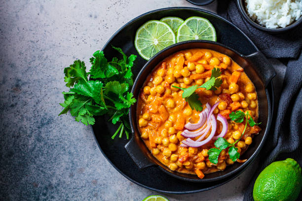

Vegetarian Chickpea Curry

Vegetarian Chickpea Curry is a flavorful and wholesome dish that brings together the rich and aromatic blend of spices with the protein-packed goodness of chickpeas.
This curry features a base of sautéed onions, garlic, and ginger, complemented by a mix of curry powder, cumin, coriander, turmeric, and a touch of cayenne for heat.
Ingredients
- 2 tablespoons vegetable oil
- 1 large onion, finely chopped
- 3 cloves garlic, minced
- 1 tablespoon ginger, grated
- 1 tablespoon curry powder
- 1 teaspoon ground cumin
- 1 teaspoon ground coriander
- 1 teaspoon turmeric
- 1/2 teaspoon cayenne pepper (adjust to taste)
- 2 cans (15 ounces each) chickpeas, drained and rinsed
- 1 can (14 ounces) diced tomatoes
- 1 can (14 ounces) coconut milk
- Salt and pepper to taste
- Fresh cilantro, chopped (for garnish)
- Cooked rice or naan bread (for serving)
Steps
- Sauté Aromatics:
- In a large skillet or pan, heat the vegetable oil over medium heat.
- Add chopped onions and sauté until they become translucent.
- Add Spices:
- Add minced garlic and grated ginger to the onions. Sauté for an additional 1-2 minutes until fragrant.
- Stir in curry powder, ground cumin, ground coriander, turmeric, and cayenne pepper.
- Cook for another 1-2 minutes to toast the spices.
- Add Chickpeas and Tomatoes:
- Add the drained chickpeas to the skillet, stirring to coat them with the spice mixture.
- Pour in the diced tomatoes (with their juices) and stir well. Allow the mixture to simmer for about 5 minutes.
- Pour in Coconut Milk:
- Pour in the coconut milk and stir to combine. Bring the curry to a gentle simmer. If the curry is too thick, you can add a bit of water to reach your desired consistency.
- Season and Simmer:
- Season the curry with salt and pepper to taste.
- Cover the skillet and let the curry simmer on low heat for 15-20 minutes, allowing the flavors to meld together.
- Serve:
- Serve the chickpea curry over cooked rice or with naan bread.
- Garnish with fresh chopped cilantro.